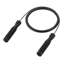

Jump Rope
A classic cardio drill that trains calves, ankles, and timing with a rope and rhythmic hops.
Full body · Jump Rope · Beginner

Muscles worked by the Jump Rope
Primary
Secondary
Also called: calf, calves, gastrocnemius, gastroc, soleus, deep calf.
Equipment

Jump RopeAlso called: skipping rope, speed rope, cardio rope.
How to do the Jump Rope
- Hold a jump rope handle in each hand with the rope behind you.
- Swing the rope overhead and forward in a smooth arc.
- Hop just high enough for the rope to pass under your feet.
- Land softly on the balls of the feet, knees slightly bent.
- Keep a steady rhythm for the prescribed interval.
Form tips
- Use the wrists to spin the rope, not the shoulders.
- Hop low — only an inch or two off the floor.
- Stay tall with elbows close to the sides.
At a glance
| Body part | Full body |
|---|---|
| Category | Cardio |
| Force type | Dynamic |
| Mechanic | Compound |
| Difficulty | Beginner |
| Equipment | Jump Rope |
| Goals | Endurance |
| Tags | Full body, Warm up, Conditioning |
| MET | 11.8 (metabolic equivalent, for calorie estimates) |
| Unilateral | No |
| Bodyweight | No |
| Dataset id | jump-rope |
Jump Rope in German & Spanish
| German | Seilspringen |
|---|---|
| Spanish | Saltar la Cuerda |
Descriptions, instructions and tips ship in all three languages in the JSON.
Related exercises
Exercise data (JSON)
The record below is exactly what exercises.json ships for this exercise — names, descriptions, instructions and tips in English, German and Spanish.
{
"id": "jump-rope",
"name_en": "Jump Rope",
"name_de": "Seilspringen",
"name_es": "Saltar la Cuerda",
"description_en": "A classic cardio drill that trains calves, ankles, and timing with a rope and rhythmic hops.",
"description_de": "Ein klassischer Cardio-Drill, der Waden, Sprunggelenke und Timing mit Seil und rhythmischen Sprüngen trainiert.",
"description_es": "Un ejercicio cardio clásico que trabaja gemelos, tobillos y ritmo con una cuerda y saltos rítmicos.",
"category": "cardio",
"force_type": "dynamic",
"mechanic": "compound",
"difficulty": "beginner",
"equipment": "jump_rope",
"body_part": "full_body",
"primary_muscles": [
"gastrocnemius",
"soleus"
],
"secondary_muscles": [
"forearm_flexors",
"quadriceps"
],
"goals": [
"endurance"
],
"tags": [
"full_body",
"warm_up",
"conditioning"
],
"is_unilateral": false,
"is_bodyweight": false,
"instructions_en": [
"Hold a jump rope handle in each hand with the rope behind you.",
"Swing the rope overhead and forward in a smooth arc.",
"Hop just high enough for the rope to pass under your feet.",
"Land softly on the balls of the feet, knees slightly bent.",
"Keep a steady rhythm for the prescribed interval."
],
"instructions_de": [
"Halte einen Springseilgriff in jeder Hand, das Seil hinter dir.",
"Schwinge das Seil in einem sauberen Bogen über den Kopf nach vorn.",
"Springe gerade so hoch, dass das Seil unter den Füßen durchgeht.",
"Lande weich auf den Fußballen, leicht gebeugte Knie.",
"Halte das Tempo für das vorgegebene Intervall."
],
"instructions_es": [
"Sujeta el mango de la cuerda en cada mano con la cuerda detrás de ti.",
"Balancea la cuerda sobre la cabeza y al frente en un arco fluido.",
"Salta justo lo suficiente para que la cuerda pase bajo los pies.",
"Aterriza suave sobre las puntas, rodillas ligeramente flexionadas.",
"Mantén un ritmo constante durante el intervalo indicado."
],
"tips_en": [
"Use the wrists to spin the rope, not the shoulders.",
"Hop low — only an inch or two off the floor.",
"Stay tall with elbows close to the sides."
],
"tips_de": [
"Drehe das Seil aus den Handgelenken, nicht aus den Schultern.",
"Springe niedrig — nur wenige Zentimeter vom Boden.",
"Stehe aufrecht, Ellenbogen am Körper."
],
"tips_es": [
"Gira la cuerda con las muñecas, no con los hombros.",
"Salta bajo — apenas dos o tres centímetros del suelo.",
"Mantente erguido con los codos cerca del cuerpo."
],
"met": 11.8,
"images": {
"flat": {
"main": "images/flat/jump-rope-main.webp"
}
}
}Fetch just this exercise
const { exercises } = await fetch(
"https://exercise-dataset.com/exercises.json"
).then(r => r.json());
const ex = exercises.find(e => e.id === "jump-rope");Free for personal and commercial in-app use with attribution (“Exercise data by RepDB”) — see the license and ready-made attribution snippets. Redistributing the data as a dataset or API is not permitted.